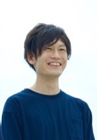

About Me

パーソナル情報
経歴
・2009年3月 ： 東洋大学 経営学部 マーケティング学科 卒業
・2010年4月 ： 高校の同級生3人でバンド活動を開始 ベースを担当
20代は夢に向かってチャレンジしたいという気持ちでバンド活動に明け暮れました。
6枚のCDを全国リリース。全国10箇所でのライブツアーを実施したり、Twitterを用いて宣伝や、
CDを置いていただいている店舗周り、ラジオ出演や音楽雑誌のインタビュー掲載等の広告を活用し認知を広めていく。
東京で約200人を集客するライブを実施しました。
・2017年1月 ：バンド脱退
・2017年1月〜：地元企業に入社 経理部へ配属
バンド活動は、30歳までに300人キャパの会場でチケット完売させるという目標に挑戦していましたが達成できなかったため断念。
学生時代に学んだ会計のスキルを活かし、建設機械の総合レンタル業を営むグループ会社の管理業務を行っている地元企業に就職。
会計ソフト（PCA会計）を使い資金の流れを見える化。
業務改善にも注力し、マニュアルの作成や手書き資料のExcel切り替えを促進。
それにより日々の業務を30分短縮することに成功。新人教育係も任されております。
学習したプログラミングスキル
- 12月1日から朝活(5時~7時)を中心に学習を続けています
- 12月1日〜1月17日( 46 日) ： HTML, CSS
- 1月11日〜1月31日( 20 日) ： JavaScript, jQuery
- 2月1日〜5月31日( 119日) ： PHP, Laravel, Git, Docker, Vagrant
- 6月1日〜現在 : インフラ, Vue.js
どんなエンジニアになりたいか
- 現在の会社を退職しIT企業を志した理由は、
- 「多くの人にITサービスを提供して、作業効率改善や感動体験を共有したい」からです。
- ------------------------------------------------------------------------------------------------
- 現職でアナログのシステムから新しいシステムへの移行があり、1営業所あたりの残業時間が30％ほど削減されました。
- 自身も21~22時に退社するような状況でしたが、19時には退社する事ができるようになり、ITの力にとても感動したのを覚えています。 その経験からプログラミングに興味を持ち勉強をはじめました。
- 学習初期はエラーで挫けてしまいそうになりましたが、思うようにプログラムを動かせた時や、 エラーを解決できたときの高揚感にのめり込み、プログラミングを仕事にしたいと考えるようになりました。
- 様々なサービスにITを組み合わせて、多くの方に改善と感動を届けたいです。そしてそんなサービスを作ることができるエンジニアを目指しています。
- 利用者の声に耳を傾けて改善を続けることができる、利用者に近いエンジニアになりたいと考えております。